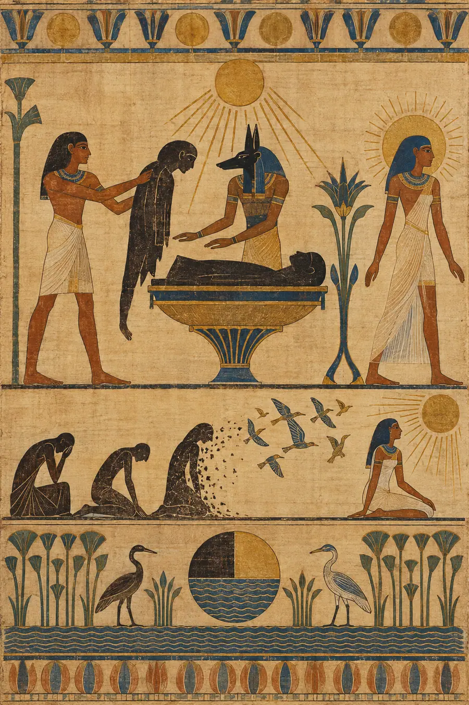
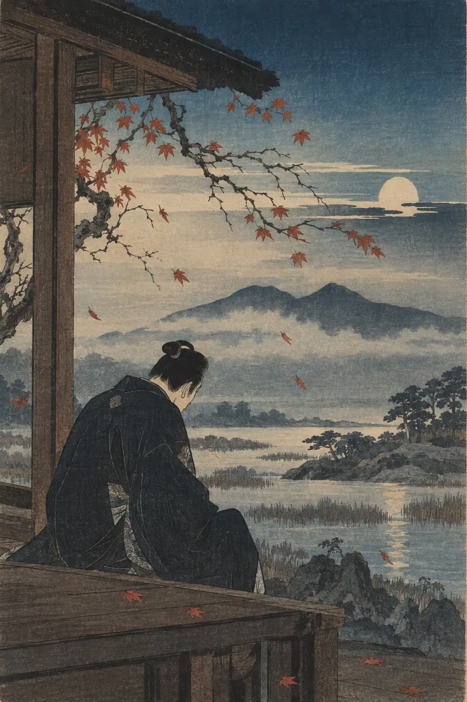
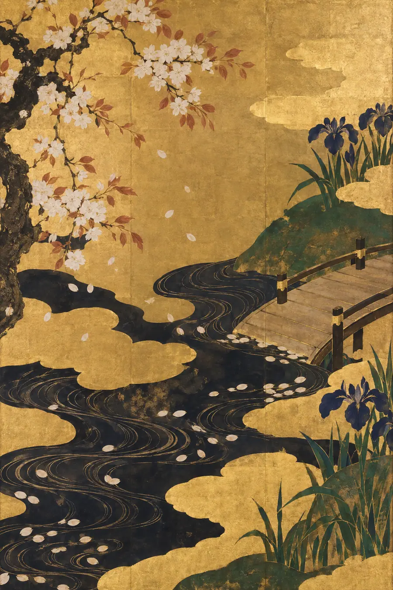
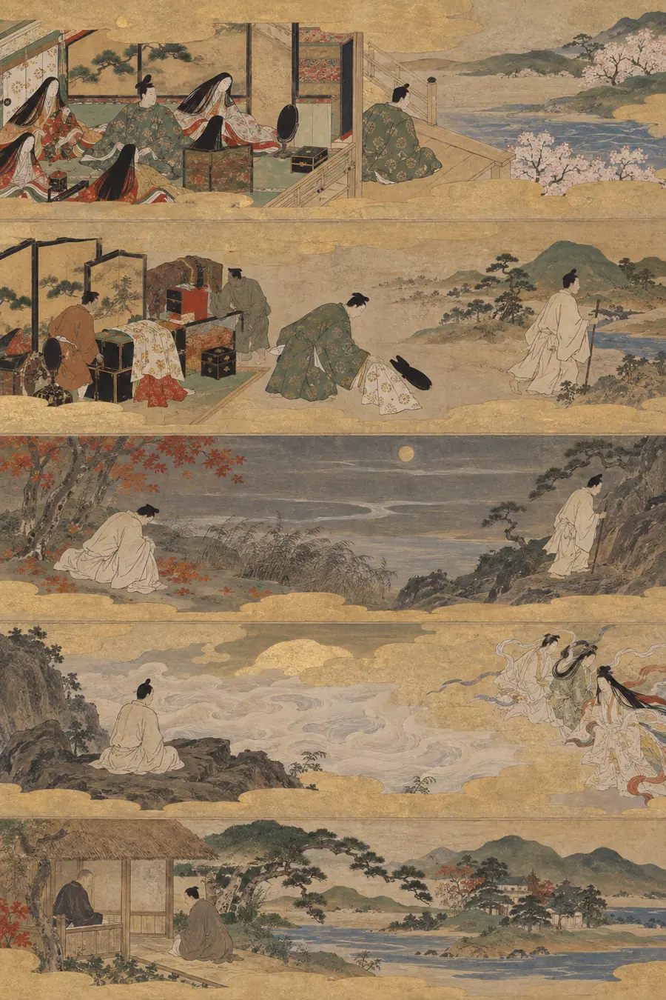
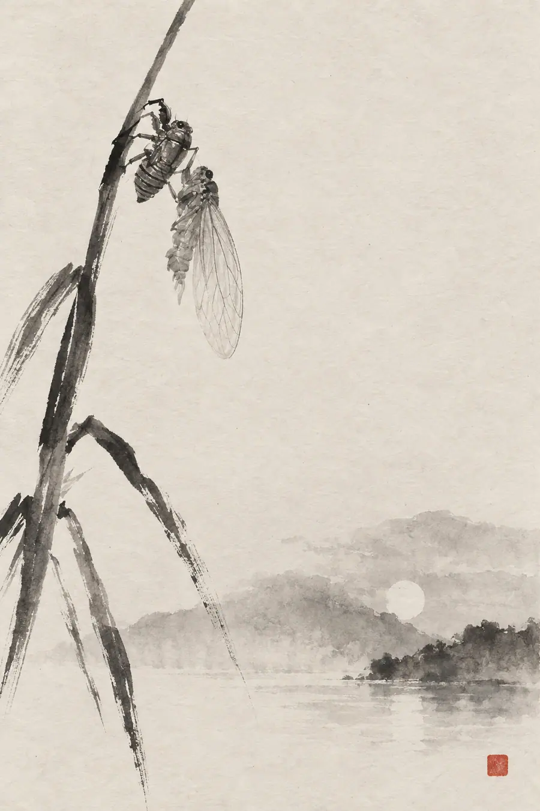
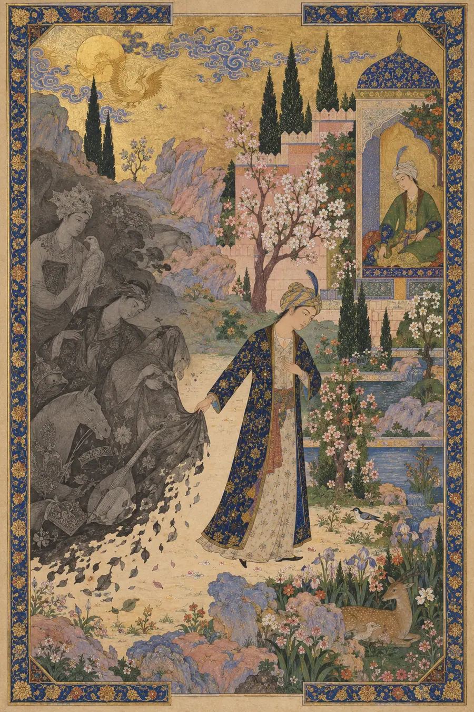
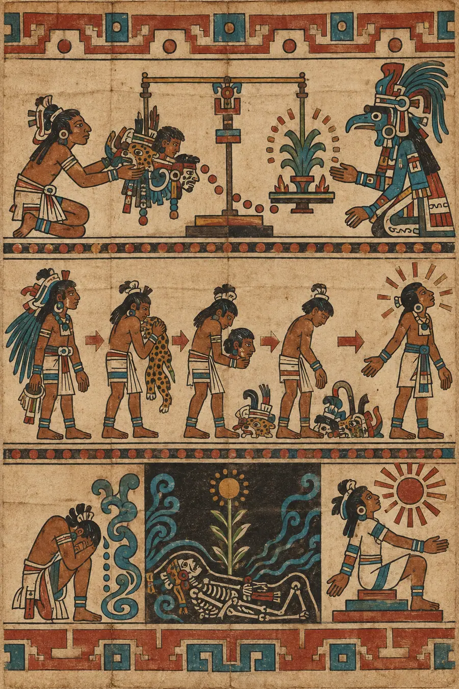
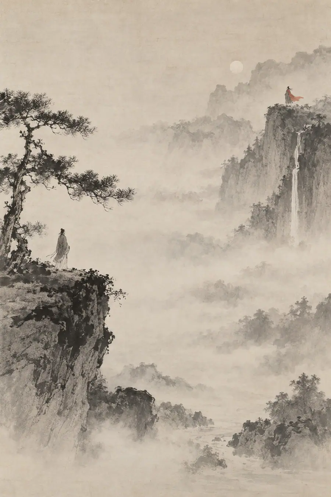
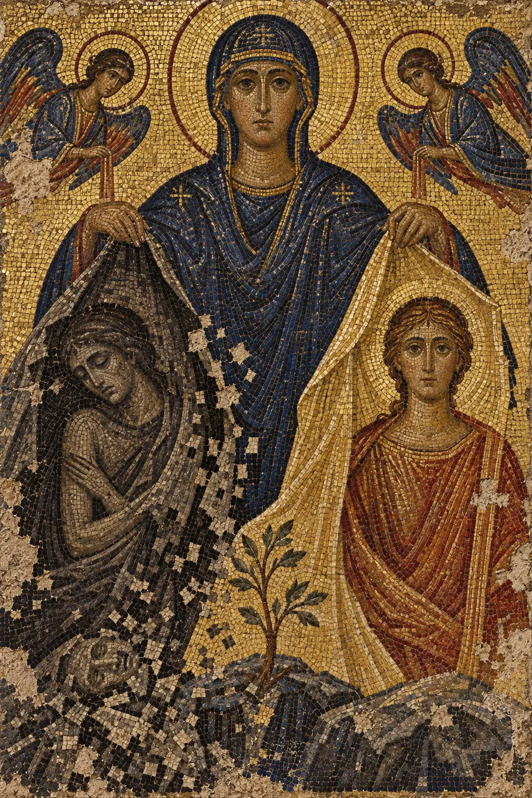
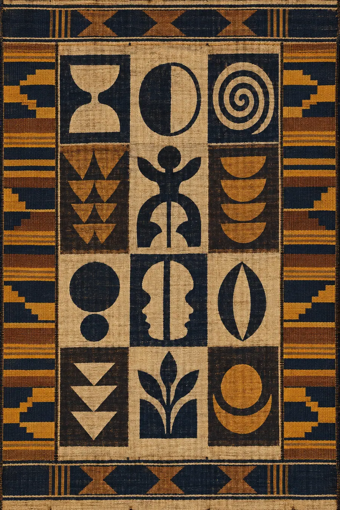

I. La Explicación Lógica
La transformación tiene costes psicológicos medibles. La curva de transición —ya sea el modelo de duelo de Kübler-Ross o el modelo de tres fases de Bridges— describe cómo los humanos se mueven a través de finales, zonas neutras y nuevos comienzos.
La disrupción de la identidad ocurre cuando los conceptos centrales del yo cambian. La investigación muestra que incluso los cambios positivos (un ascenso, una mudanza, una recuperación) se correlacionan con un aumento del cortisol, alteraciones del sueño y una carga cognitiva temporal. El cerebro trata la novedad como una amenaza hasta que se vuelve familiar.
La falacia del coste hundido explica la resistencia al cambio: la gente sobrevalora la inversión pasada. El coste de oportunidad explica las decisiones futuras: a lo que renuncias al elegir un camino.
La psicoterapia distingue el cambio del crecimiento. El cambio es situacional. El crecimiento es estructural. Ambos tienen periodos de ajuste.
La teoría de la identidad describe las transiciones de roles como el proceso de desprenderse de las antiguas identidades de rol mientras se interiorizan otras nuevas. El proceso de abandono de un rol implica duda, búsqueda de alternativas, puntos de inflexión y la creación de nuevas narrativas de identidad.
La teoría de la autodiscrepancia sugiere que el malestar surge cuando hay brechas entre el yo real, el ideal y el que se debe ser. Un cambio positivo puede aumentar temporalmente la autodiscrepancia a medida que el antiguo yo real se disuelve antes de que el nuevo se forme por completo.
Esa explicación es pulcra, lógica, correcta y completamente hueca. Describe la contabilidad, pero no lo que se siente al pagar.
II. La Explicación Sentida
Hay un coste que no es ni hundido ni de oportunidad. Es el coste de pagar por una nueva realidad con fragmentos de tu antiguo yo —y sentir la transacción en el cuerpo.
Cada transformación es un intercambio. No te conviertes en algo nuevo. Intercambias algo viejo por ello. El trueque no es metafórico. Es real. Una versión de ti deja de existir para que otra versión pueda comenzar. Sientes la muerte de quien eras, incluso cuando en quien te estás convirtiendo es exactamente en quien querías ser.
El duelo no es un error. No es resistencia. No es la incapacidad de apreciar lo bueno. Es el recibo. La prueba de que se efectuó el pago.
Este coste aparece en todas las tradiciones que han examinado la transformación con seriedad: los mitos que requerían la muerte antes del renacimiento, las iniciaciones que exigían la destrucción simbólica del antiguo yo, los caminos espirituales que hablaban de la aniquilación como puerta de entrada a la llegada. Todas entendieron lo mismo: no puedes añadir el nuevo yo encima del viejo. Debes despejar el terreno. El despeje es el duelo.
Esto es fanāʾ —la aniquilación sufí. No la destrucción, sino la disolución. El yo que emprende el viaje no puede ser el yo que llega. Los místicos lo sabían: la transformación no es adición. Es sustracción. Te vuelves menos de lo que eras para poder convertirte en algo completamente distinto. El ego experimenta esto como la muerte. El alma lo experimenta como la llegada. Rumi escribió sobre la caña cortada del lecho: la música solo brota de la herida de la separación. El intercambio no es opcional. La herida es el instrumento. El instrumento no puede existir sin la herida. La música no puede existir sin el corte.
Esto es nepantla —el espacio intermedio náhuatl. Nunca estás en transición de un estado estable a otro. Siempre estás en el espacio intermedio, donde el antiguo yo no ha muerto del todo y el nuevo yo no se ha formado por completo. Gloria Anzaldúa lo sabía: no es una fase que haya que atravesar. Es un lugar que habitar. La tierra fronteriza no es el obstáculo. Es el trabajo en sí. Los aztecas llamaban a nepantla el terreno peligroso, el lugar donde la piel vieja ha sido mudada pero la nueva aún no se ha endurecido. Estás en carne viva y permeable. Todo te toca más. Esto no es un defecto en la transformación, es la única manera en que la transformación ocurre.
Esto es el fénix —pero el mito miente. El fénix no resurge de las cenizas. El fénix se convierte primero en las cenizas. La quema no es castigo ni purificación. La quema es el intercambio. No puedes ser el pájaro y la ceniza simultáneamente. El fuego es el momento en que pagas. Y antes del fuego, el fénix era un pájaro que nunca había conocido la quema, una criatura completamente diferente. El fénix quemado y el fénix sin quemar no son el mismo ser. Uno pagó por el otro. El mito nos dice que el pájaro resurge, pero no nos dice que el pájaro que resurge es un extraño para el pájaro que ardió. No se conocen. No pueden. Uno de ellos tuvo que morir para que el otro existiera.
La tradición japonesa le dio su palabra más precisa —mono no aware, el patetismo agridulce de la impermanencia. Se suele mencionar en el contexto de los cerezos en flor: la belleza de lo que cae. Pero mono no aware es el intercambio en sí, la comprensión de que la belleza del nuevo yo es inseparable de la caída del antiguo. La flor no es bella a pesar de caer. Es bella porque cae. La persona en la que te conviertes no es valiosa a pesar de la persona que tuviste que dejar de ser. Es valiosa porque esa persona pagó por ella. Los japoneses no trataban esto como una tragedia. Lo trataban como la estructura de todo. El duelo y la belleza son un único acontecimiento. Sentir solo la belleza es perderse la mitad. Sentir solo el duelo es perderse la otra mitad. Mono no aware es la habilidad de sentir ambas cosas a la vez: el intercambio completado, el pago visible, la belleza real porque el coste fue real.
La tradición hebrea llamó a la sustancia del antiguo yo hevel —vapor, aliento, la palabra que el Eclesiastés usó para todo. Traducido como «vanidad», en realidad significa vapor: aquello que intentas agarrar y tu mano se cierra en el aire. El antiguo yo, cuando lo has dejado atrás, es hevel. Nunca fue sólido, solo se sentía sólido mientras estabas dentro de él. La versión de ti que reía con ese amigo, que sobrevivió a esa enfermedad, que creía en esa certeza, era vapor incluso entonces. Solo sabes que era vapor después del intercambio, cuando miras atrás y ves que aquello por lo que te afliges nunca iba a durar de todos modos. Esto no hace que el duelo sea más pequeño. Hevel no es insignificante, es el material del que está hecho todo lo real. El antiguo yo era vapor, y también eras tú, y se te permite llorar por lo que siempre iba a pasar. El Eclesiastés no decía que nada importa. Decía que todo importa y todo pasa, y el pasar no es un defecto en el intercambio, sino su motor.
La tradición nórdica entendía el intercambio como wyrd —el tejido. No eres una serie de yos que se intercambian. Eres un hilo en un tapiz, y cada transformación vuelve a tejer el patrón. El antiguo yo no se destruye, se entreteje en el nuevo patrón, todavía visible, todavía soportando peso, de la misma manera que un hilo que cambia de color sigue siendo el mismo hilo. Los nórdicos no creían que te convirtieras en alguien nuevo. Creían que te convertías en un nuevo patrón hecho del mismo material. Por eso el duelo de la transformación no es un error: el hilo antiguo sigue ahí. Puedes sentirlo en el tejido. El ascenso no borró a la persona que fue ignorada; esa persona es un color en el patrón actual. La recuperación no borró al superviviente; el superviviente es el hilo. Wyrd enseña que el intercambio no elimina al antiguo yo. Lo recontextualiza. Y la recontextualización es una especie de pérdida, incluso cuando el nuevo contexto es mejor.
La tradición quechua ofrecía el ayni —reciprocidad sagrada, el equilibrio vivo entre tú y todo. El ayni no es una transacción; es participación. Cada transformación es un ayni con el universo: tú das el antiguo yo, recibes el nuevo, y el equilibrio debe ser honrado. La comprensión andina es que no puedes tomar lo nuevo sin dar lo viejo; el intercambio no es opcional, y la entrega debe ser reconocida. Por eso el duelo de la transformación no es una falta de gratitud. Es la mitad del ayni que corresponde al reconocimiento. Recibiste el ascenso, la recuperación, la maestría, la paternidad. El recibir no está completo hasta que el dar es honrado. El duelo es el honor. Saltarse el duelo —llamarlo crecimiento y seguir adelante— es dejar el ayni inacabado. El universo lleva las cuentas. Los libros se cierran cuando el intercambio se siente en su totalidad.
El amigo que dejas atrás cuando cambias. La relación que funcionaba porque ambos estabais rotos del mismo modo, y ahora tú ya no estás roto de ese modo. El duelo no es por perderlos a ellos. Es por perder la versión de ti mismo que encajaba con ellos. La versión que se reía de esos chistes, que necesitaba esa dinámica, que entendía ese lenguaje. Esa persona pagó por quien te convertiste.
La recuperación que cuesta la identidad de estar herido. Pasaste años aprendiendo a sobrevivir a la cosa. La supervivencia se convirtió en tu forma. Sabías cómo navegar desde dentro de esa forma. Sanar significa que la forma se disuelve. Eres libre y también estás desorientado. Luchaste tanto para llegar aquí, ¿por qué llegar se siente como irse de casa?
El ascenso que cuesta ser la persona que podía quejarse de ser ignorada. La habilidad adquirida que cuesta el asombro de no saber. La partida que cuesta la permanencia que en realidad nunca elegiste, pero dentro de la cual te habías acomodado.
El cuerpo que se transforma: peso perdido, músculo ganado, enfermedad superada, edad aceptada. La persona que se veía diferente en el espejo sabía cómo vivir dentro de ese cuerpo. Se había adaptado. La adaptación era pericia. El nuevo cuerpo requiere una nueva pericia. La antigua pericia es ahora conocimiento inútil. No puedes transferir la habilidad de vivir en el cuerpo antiguo a vivir en el nuevo. Tienes que aprender desde cero.
La creencia que se transforma: fe perdida, fe encontrada, cosmovisión destrozada y reconstruida. El creyente que sostenía la antigua certeza sabía cómo navegar la realidad desde dentro de esa certeza. La duda que precedió a la nueva creencia no estaba vacía, estaba llena de la vieja creencia muriendo. La nueva creencia no es una adición. Es un reemplazo. El antiguo creyente pagó por el nuevo.
Todos estos intercambios comparten una estructura: la versión de ti que existía antes del cambio tenía pericia, adaptación, conocimiento, relaciones e identidad que encajaban con la realidad anterior. Esa versión no estaba equivocada. Estaba sobreviviendo. Era experta en sobrevivir exactamente a lo que estaba sobreviviendo. El cambio —incluso el cambio deseado, especialmente el cambio deseado— hace que esa pericia quede obsoleta. No equivocada. Obsoleta. Hay un duelo específico de volverse hábil en algo que ya no se necesita.
El intercambio es inevitable. No hay transformación sin pago. La pregunta no es si pagarás, sino si te permitirás sentir la transacción. La mayoría de la gente no lo hace. Lo llaman crecimiento y se niegan a llorar. El duelo espera. No caduca. Puede sentirse décadas después: el reconocimiento de que se pagó algo por lo que nunca se guardó luto por completo. La transacción se completa, reconozcas o no el coste. El reconocimiento es para ti. El duelo es para ti. El pago ya se realizó.
III. Las Pruebas
Estas no son preguntas sobre el cambio. Son situaciones que revelan si sientes el intercambio.
Todas las pruebas comparten un patrón: una transformación positiva que cuesta algo real. No un fracaso, no un revés, no un cambio no deseado. La persona obtuvo lo que quería. Y el obtenerlo le costó. La pregunta es si puedes localizar el coste, si puedes sentir la transacción desde dentro, no solo observarla desde fuera.
Prueba 1 — La Recuperación
Alguien completa el tratamiento para una condición que moldeó su identidad durante una década. Clínicamente está mejor. Se siente peor. Explícalo.
Respuesta hueca: «Esta es una forma de trastorno de adaptación postratamiento en la que el individuo debe reconstruir su identidad sin la estructura familiar de la enfermedad y el tratamiento».
Por qué es hueca: Patologiza una respuesta normal. Enmarca el duelo como un trastorno en lugar de un coste. No puede explicar por qué mejorar se sentiría como una pérdida.
Respuesta sentida: «Perdieron a la persona que sabía cómo sobrevivir a la cosa. Esa persona estaba agotada, mermada y limitada, pero también era hábil. Había desarrollado toda una pericia en estar enferma. Sabía cómo moverse por los hospitales, cómo explicar su condición, cómo dosificar su energía, cómo defender sus necesidades. Esa pericia es inútil ahora. Peor que inútil: es un recordatorio del tiempo invertido en desarrollar habilidades que ya no se aplican. La recuperación que querían cuesta las habilidades de supervivencia que construyeron. Están sanos y, a la vez, son de pronto incompetentes. Tienen que aprender a vivir desde cero».
Prueba 2 — La Amistad Superada
Dos amigos se distancian porque uno cambió y el otro no. El que cambió eligió el cambio deliberadamente. Aún siente duelo por la amistad. ¿Por qué?
Respuesta hueca: «Las relaciones requieren un contexto compartido, y el crecimiento personal puede crear distancia cuando los valores o estilos de vida divergen con el tiempo».
Por qué es hueca: Describe el mecanismo del distanciamiento sin tocar el coste. Suena como un libro de texto de sociología. El duelo sigue sin explicación.
Respuesta sentida: «Están de luto por la versión de sí mismos que encajaba con ese amigo. La versión que necesitaba la dinámica, entendía los chistes, compartía las quejas. Esa persona pagó por quien se convirtieron. El amigo no cambió, esa es la clave. El amigo sigue ahí, siendo quien siempre fue, lo que significa que el amigo es un museo viviente de quien la persona solía ser. Cada conversación es una visita a un yo pasado. El duelo no es por perder al amigo. Es por alejarse de alguien que todavía sabe cómo ser la persona que solías ser, la persona que tuviste que dejar de ser para convertirte en esta».
Prueba 3 — El Cambio de Carrera
Alguien deja un trabajo que odiaba por una carrera con la que soñaba. Está haciendo el trabajo que quería. Siente una tristeza inexplicable en momentos aleatorios. Explica su forma.
Respuesta hueca: «Esto representa un estrés de adaptación normal combinado con la pérdida de rutinas familiares y relaciones laborales».
Por qué es hueca: «Estrés de adaptación» es lenguaje de Recursos Humanos. No puede explicar por qué la tristeza se siente como duelo en lugar de nerviosismo.
Respuesta sentida: «Perdieron el derecho a quejarse. Perdieron la solidaridad de odiar algo con otras personas que también lo odiaban. La queja era una relación: construyeron lazos a través del agravio compartido, a través del “al menos estamos juntos en esto”. El nuevo trabajo no tiene un enemigo común. No tiene una narrativa de supervivencia. Es solo trabajo. Querían esto con tantas ganas y ahora lo tienen, y el tener es más solitario de lo que el desear fue jamás. La tristeza es: solían saber exactamente quiénes eran, la persona atrapada en el trabajo equivocado. Ahora son la persona en el trabajo correcto y tienen que averiguar de qué quejarse. Tienen que construir un nuevo yo que no se defina por la huida. Ese yo es un extraño».
Prueba 4 — La Mudanza a un Lugar Mejor
Una persona se muda a una ciudad en la que siempre quiso vivir. Todo es mejor: el clima, la cultura, las oportunidades. No es infeliz. Pero sigue soñando con la antigua ciudad. Explica los sueños.
Respuesta hueca: «Los sueños de reubicación son una respuesta psicológica común a las transiciones vitales importantes, y representan el procesamiento cerebral de los cambios ambientales».
Por qué es hueca: Explica el mecanismo pero no el significado. La persona ya sabe que el cerebro procesa el cambio. Quiere saber por qué el procesamiento se siente como una pérdida.
Respuesta sentida: «La antigua ciudad era el testigo. Las calles guardaban la versión de ellos que creció allí, que fracasó por primera vez allí, que se enamoró y le rompieron el corazón allí. La ciudad no cambió, ellos sí. Y la ciudad recuerda. La nueva ciudad es mejor en todos los sentidos medibles, pero no tiene memoria de ellos. Son un extraño sin historia en estas calles. Los sueños son visitas. No a la ciudad, sino a la persona que eran en la ciudad. La que tenía razones para irse. La que soñaba exactamente con esto. Esa persona ya no existe. Obtuvo lo que quería. El obtenerla la mató. Los sueños son el funeral que no cesa de ocurrir».
Prueba 5 — La Habilidad Dominada
Un artista alcanza la maestría técnica. Su obra es objetivamente mejor. Siente menos asombro que cuando era un principiante. Explica la pérdida.
Respuesta hueca: «La pericia puede reducir la novedad y el compromiso emocional a medida que las habilidades se vuelven automáticas y predecibles».
Por qué es hueca: Describe el cambio cognitivo pero omite el duelo. Trata la pérdida de asombro como un efecto secundario en lugar de un intercambio.
Respuesta sentida: «Pagaron la maestría con el misterio. Cuando eran principiantes, cada trazo era una pregunta. No sabían qué pasaría. La incertidumbre era el arte. Ahora saben qué pasará. La pregunta se responde antes de que la formulen. La maestría es real y valiosa: pueden ejecutar su visión de manera fiable. Pero la visión cuesta menos de alcanzar, lo que significa que vale menos una vez alcanzada. Cambiaron la emoción de no saber por la satisfacción de saber. Fue un trato justo. Los tratos siguen siendo pérdidas. Están parados sobre la habilidad que construyeron y echan de menos la confusión que los impulsó a construirla».
Prueba 6 — La Paternidad
Alguien se convierte en padre/madre. Quería esto. Ama a su hijo. También siente que ha perdido algo que no puede nombrar. Explícalo.
Respuesta hueca: «Los nuevos padres comúnmente experimentan cambios de identidad a medida que se adaptan a su nuevo rol y responsabilidades».
Por qué es hueca: Etiqueta el cambio sin localizar la pérdida. El padre/madre sabe que su rol cambió. Quiere saber qué murió.
Respuesta sentida: «Perdieron a la persona que podía irse. La persona cuyo tiempo era suyo. La persona cuyos planes no tenían que incluir dieciocho años de contingencia. Esa persona tenía una libertad que nunca apreció del todo porque nunca la ejerció del todo; la libertad estaba en la posibilidad, no en la ejecución. El hijo es deseado y amado. El intercambio sigue siendo real. Una versión del padre/madre dejó de existir en el momento en que el hijo comenzó a existir. Ya no son esa persona y nunca volverán a serlo. El duelo es por las vidas no vividas que la llegada del hijo hizo imposibles. El padre/madre que podrían haber sido para hijos que no tuvieron. La persona que podrían haber sido sin hijos en absoluto. Esas vidas no son hipotéticas, eran posibilidades reales que ahora están muertas. El hijo vale el intercambio. El intercambio, aun así, cuesta».
Prueba 7 — El Final que Tenía que Acabar
Alguien deja una relación que le hacía miserable. Está seguro de que fue la decisión correcta. Es más feliz ahora. A veces todavía llora por ello. Explícalo.
Respuesta hueca: «El apego emocional puede persistir incluso después de la decisión racional de terminar una relación, y el duelo es una parte normal del procesamiento de la pérdida de una conexión significativa».
Por qué es hueca: Reconoce el duelo pero no puede explicar por qué una relación que le hacía infeliz todavía se siente como una pérdida cuando termina.
Respuesta sentida: «Están de luto por la persona que eran en esa relación; no la versión feliz, la versión miserable. Esa persona era infeliz, pero también estaba segura de su infelicidad. Sabía exactamente qué estaba mal. Tenía un enemigo claro. Tenía una narrativa de estar atrapada y luchar por escapar. Ahora ha escapado y la narrativa ha terminado. La libertad que quería cuesta la claridad que tenía. Es feliz y también está perdida. Ya no sabe contra qué empujar. La relación que la hacía miserable también la hacía sentir segura, segura de lo que no quería, segura de quién era en relación con ello. Esa certeza era una especie de hogar. Un hogar doloroso, pero un hogar al fin y al cabo. Dejarlo significa construir un nuevo yo que no se defina por aquello de lo que está escapando. Ese yo tiene que descubrir lo que quiere, no solo lo que rechaza. Ese trabajo es más difícil de lo que fue escapar».
IV. El Modo de Fracaso
En todas las pruebas, las respuestas huecas comparten la misma textura:
- Normalizan el duelo como un ajuste, una transición o un dolor de crecimiento.
- Usan un lenguaje que podría aparecer en un libro de texto: «cambio de identidad», «periodo de ajuste», «cambio estructural».
- Son correctas —no puedes disputarlas fácticamente.
- Describen la experiencia como una incomodidad temporal en el camino hacia algo mejor.
- Asumen que el duelo es un problema a resolver o una fase que hay que superar.
- Medicalizan las respuestas normales, convirtiendo el coste en trastorno, la pérdida en síntoma.
- Se centran en el resultado en lugar de en la transacción, en la llegada en lugar de en el pago.
- Tratan el cambio positivo como algo inequívocamente bueno, ignorando que obtener lo que querías cuesta quien eras.
Las respuestas sentidas comparten la textura opuesta:
- Honran el duelo como un coste, no como un ajuste; la transacción es real, no temporal.
- Señalan lo que se perdió, no solo lo que se ganó.
- Usan un lenguaje que la persona en la situación reconocería: «el derecho a quejarse», «el testigo», «la persona que podía irse».
- Tratan el duelo como algo permanente: el antiguo yo no regresa, el intercambio está completo.
- Reconocen que obtener lo que querías puede sentirse como una pérdida porque es una pérdida: la pérdida del yo que deseaba, del yo de la posibilidad, del yo que encajaba con lo que fue.
- Localizan el duelo en detalles específicos: no en la «identidad», sino en «la pericia de estar enfermo»; no en el «ajuste», sino en «el derecho a quejarse».
- Reconocen que incluso las transformaciones deseadas cuestan: el desear no anula el pagar.
La prueba es siempre: ¿entiende la respuesta que toda transformación es una muerte, o solo explica la mecánica del cambio?
¿Nombra el coste, o minimiza la transacción?